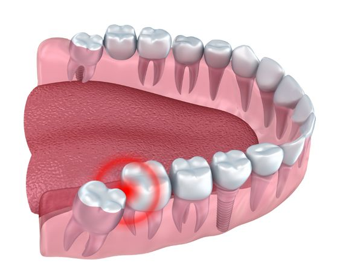

چرا دندان درد شبها بیشتر میشود؟

بسیاری از افراد تجربه کردهاند که دندان درد در طول شب شدیدتر میشود. این مشکل معمولاً به دلیل پوسیدگی دندان، التهاب عصب، عفونت یا مشکلات دندان عقل ایجاد میشود.
چرا دندان درد در شب شدیدتر احساس میشود؟
هنگام خواب، تغییر وضعیت بدن باعث افزایش جریان خون در ناحیه سر و صورت میشود. این تغییر میتواند فشار اطراف دندان را بیشتر کند و باعث شود درد شدیدتر احساس شود. همچنین در شب به دلیل آرامتر بودن محیط، تمرکز فرد روی درد بیشتر میشود.
دلایل اصلی دندان درد شبانه
- پوسیدگی عمیق دندان: وقتی پوسیدگی به عصب نزدیک شود، درد میتواند شدید و مداوم شود.
- التهاب یا عفونت عصب دندان: آسیب به پالپ دندان یکی از شایعترین دلایل درد شدید شبانه است.
- دندان عقل: رشد یا فشار دندان عقل میتواند باعث درد در فک و دندانهای اطراف شود.
- دندان قروچه: فشار دادن دندانها هنگام خواب باعث درد و حساسیت میشود.
چگونه درد دندان شبانه را کاهش دهیم؟
- استفاده از کمپرس سرد روی صورت
- رعایت بهداشت دهان و دندان
- شستوشوی دهان با آب ولرم
- مراجعه به دندانپزشک برای درمان علت اصلی
چه زمانی باید به دندانپزشک مراجعه کرد؟
اگر درد دندان شدید است، چند روز ادامه دارد، باعث تورم صورت شده یا با حساسیت شدید به سرما و گرما همراه است، بهتر است هرچه سریعتر بررسی شود.
سوالات متداول
چرا دندان درد شبها بیشتر میشود؟
افزایش فشار در ناحیه سر، کاهش حواسپرتی و مشکلاتی مانند پوسیدگی یا التهاب عصب میتوانند باعث بیشتر شدن درد در شب شوند.
آیا دندان درد شبانه نشانه عفونت است؟
در بعضی موارد بله. درد شدید، ضرباندار و طولانی میتواند نشانه التهاب یا عفونت دندان باشد.
آیا دندان درد بدون درمان خوب میشود؟
ممکن است درد برای مدتی کاهش پیدا کند، اما مشکل اصلی معمولاً باقی میماند و نیاز به بررسی دندانپزشک دارد.